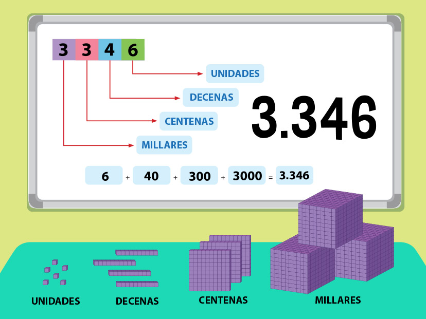

El sistema decimal es un sistema numérico de base 10, lo que significa que utiliza diez símbolos diferentes: 0, 1, 2, 3, 4, 5, 6, 7, 8 y 9.
Es el sistema más utilizado en la vida cotidiana para representar cantidades y realizar operaciones matemáticas.
El sistema binario utiliza solo los números 0 y 1.
Para convertir un número decimal a binario se siguen estos pasos:
Ejemplo: Convertir 13 a binario
13 ÷ 2 = 6 residuo 1
6 ÷ 2 = 3 residuo 0
3 ÷ 2 = 1 residuo 1
1 ÷ 2 = 0 residuo 1
Resultado: 1101
El sistema octal utiliza números del 0 al 7.
Pasos:
Ejemplo: Convertir 25 a octal
25 ÷ 8 = 3 residuo 1
3 ÷ 8 = 0 residuo 3
Resultado: 31
El sistema hexadecimal usa números del 0 al 9 y letras A, B, C, D, E y F.
Pasos:
Ejemplo: Convertir 30 a hexadecimal
30 ÷ 16 = 1 residuo 14
1 ÷ 16 = 0 residuo 1
14 = E
Resultado: 1E

| Posición | Valor |
|---|---|
| 1 | Unidades |
| 10 | Decenas |
| 100 | Centenas |
Escribe un número decimal:
Binario: -
Octal: -
Hexadecimal: -